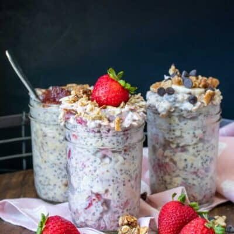

Best overnight oats

My go to breakfast, fast and simple.
Rich in protein and fiber, best of all, it takes little effort
We need:
- 100g of Oats
- Milk
- 50g Chia seeds
- Cut up fruits, berrys or jam of your choice
Workflow
- Find a bowl
- Insert the oats and chia seeds
- Add your favorite fruit or berrys (or both)
- Pour in the milk so it covers the surface and mix it all with a fork
- Refrigerate and enjoy in the morning